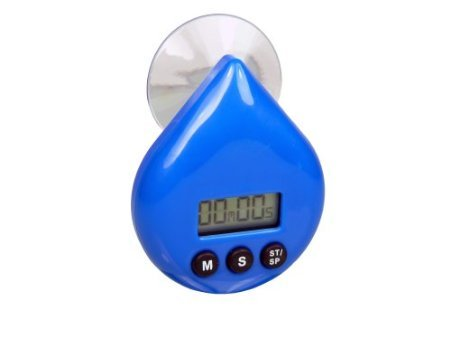
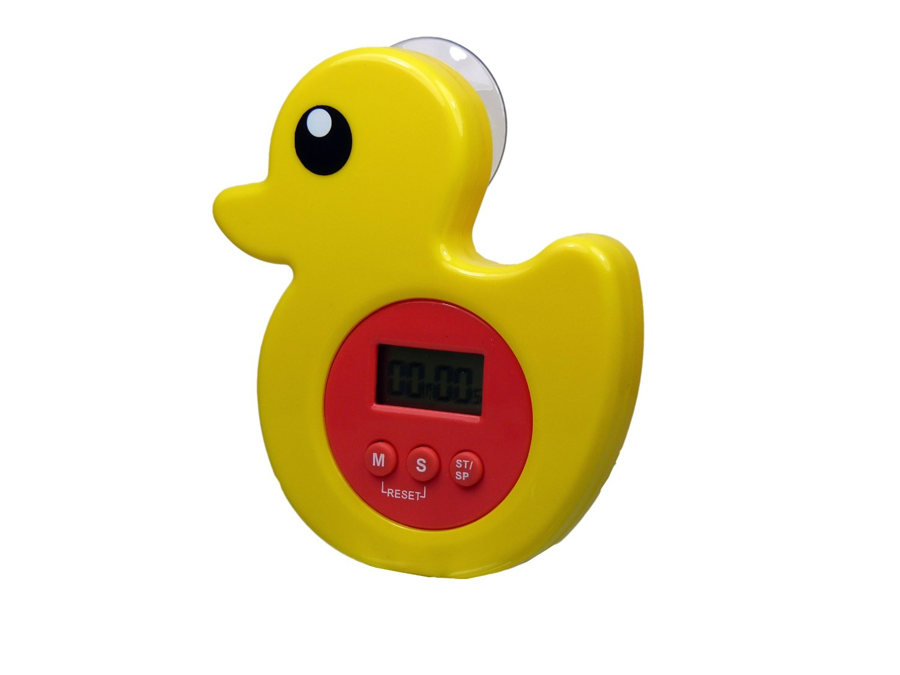
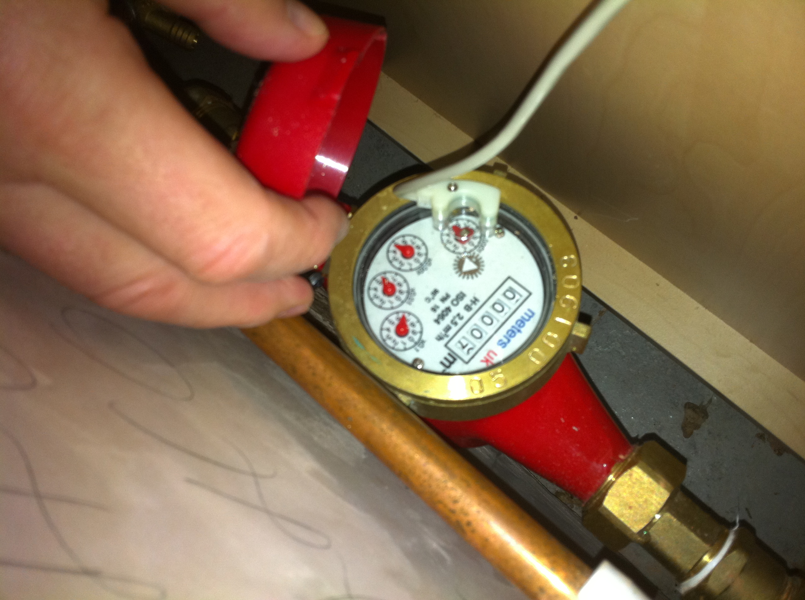
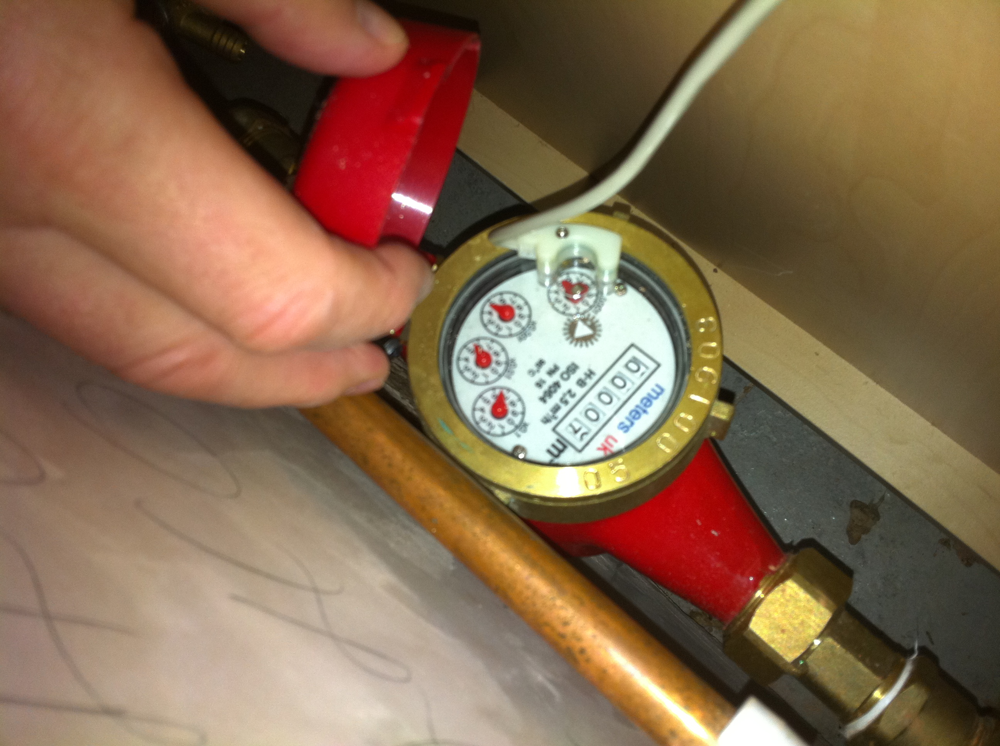

Open Droplet is by no means the first gizmo out there to measure water usage, and like anyone who is designing anything, we’ve had a good look at what’s out there. We’d like to share what we’ve found and open up the discussion to interrogate our own design decisions. We have stuck to non-invasive flow metres, as we would rather plumbing wasn’t required for fitting Open Droplet.
Timers
There are absolutely stacks of timers out there that measure how long you’re in the shower - some of them also have calibration so that they estimate - by timing your shower and multiplying this by the calibration constant you set at the beginning of your relationship with the device - how much water you’ve used. These don’t have a direct measurement component.We haven’t yet found one that is networked. They are quite different from what we’re trying to achieve with Open Droplet.
 
Sensors
We’ve found one device, the waterpebble, that senses - we think through conductance, although it could be a motion sensor - when your shower turns on, and then works on a time based calculation to tell you when to stop showering. It iteratively decreases the advised shower time every time you shower and alerts you by a traffic light system. It doesn’t seem to have much of a presence any more and is no longer available on a number of its distribution platforms. A nice touch was that you don’t have to install it - it lives at the bottom of your shower basin.
Water Pebble
There’s also the Sprāv, not yet to market, which is a networked sensor that uses a piezo to monitor flow and then indicates by a traffic light system when you should stop showering. It also has an app interface that collects and visualises the data for QS folks. The designers say there’s going to be an open API, but I’m not clear if the hardware is open.
Sprav
Ecosystem
Outside of the water sensing realm, there’s also the Open Energy Monitor which is very much aligned with our own approach of openness and also uses the Nanode (which our Lead Hardware Engineer Sam contributed to). We’re looking into their software stack to see if we could reuse an contribute to it.
 

As far as we can see, it’s not quite there for water, but their page about water sensing and some discussions on their forum show that there is interest!